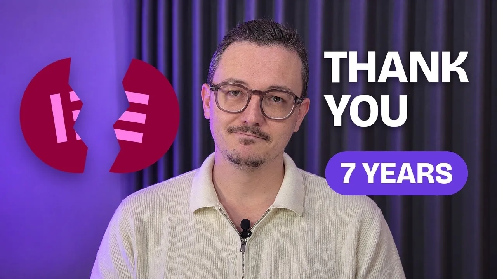
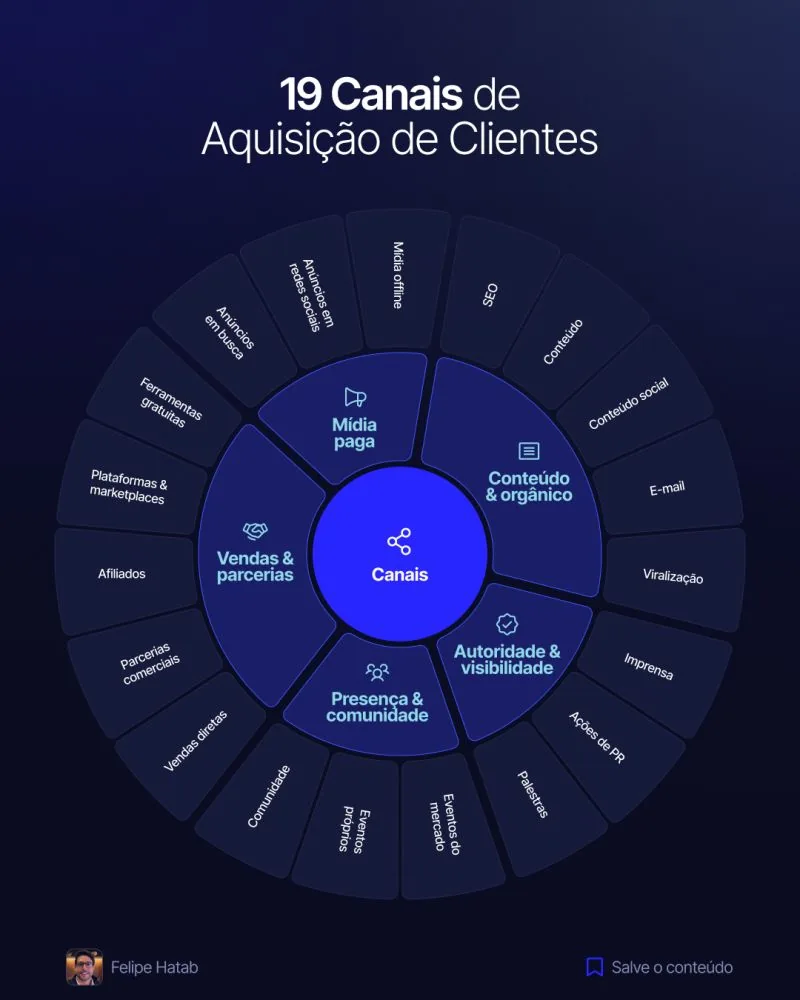
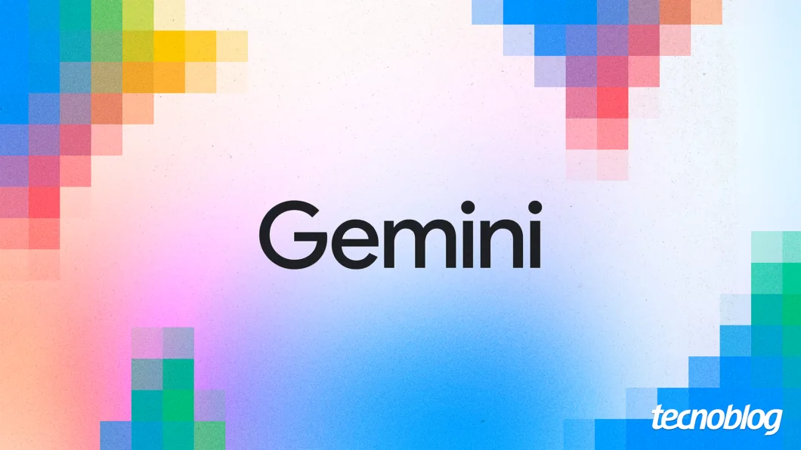
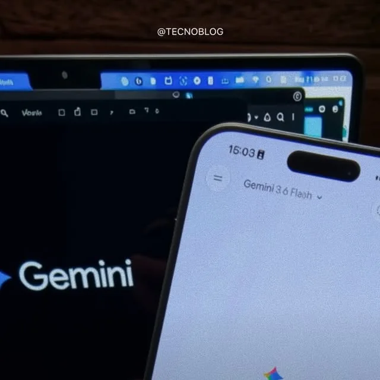

Referências
Automatizei a edição dos meus vídeos com Claude Code (passo a passo)

Goodbye Elementor. I’m moving on.
Como fazer um site de R$10.000 com IA em 20 minutos (Passo a passo)

19 canais de aquisição de clientes

Google acaba com o Gemini Gems e anuncia migração para nova ferramenta
OpenAI para treinamento após agentes de IA agirem por conta própria
